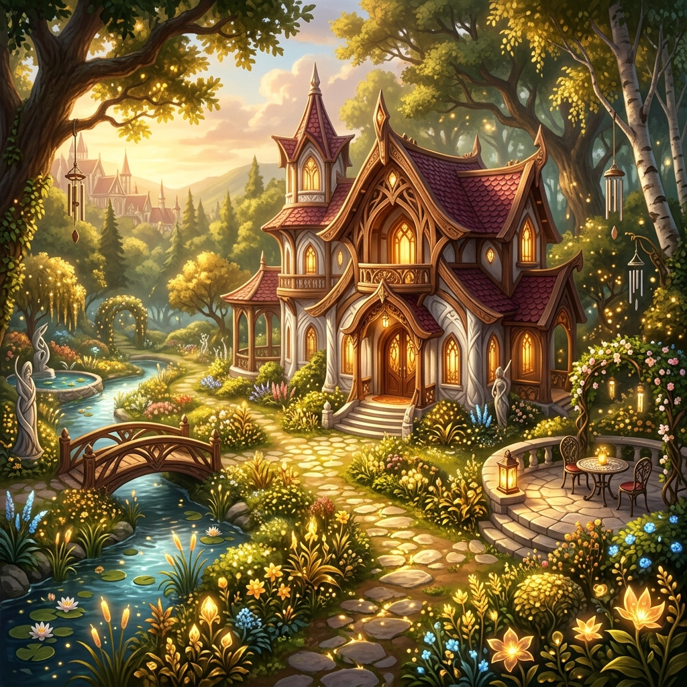

S W R A
"Through hardship and triumph, the Blood Elves emerge stronger. Silvermoon rises once more, unveiling the power and glory of the Sin'dorei."
The Legacy of Silvermoon
The Burning Crusade
Znovuzrození po pádu Sluneční studny a obnova ztracené slávy. Spojenectví s Hordou otevřelo cestu z trosek a definovalo počátek nové éry našeho lidu.
The Gathering Storm
Roky neustálých konfliktů napříč Azerothem i nekonečností vesmíru ukázaly naprostou nezlomnost a vytrvalost Sin'dorei na nespočtu bojišť.
Midnight
Nová hrozba Voidu si klade za cíl zničit Věc samotnou. Původní domov, Eversong Woods a zlaté věže Silvermoonu, budou stát pevně tváří v tvář temnotě. Světlo Sluneční studny nikdy nepohasne.
Hráčský Housing

Moje Sídlo
Zde, ve stínech zlatých listů Eversongu, jsem nalezl svůj kousek Quel'Thalasu.
- Region: [Prozatím neznámo]
- Lokace: [Doplnit lokalitu po spuštění]
- Plot ID / Instancové ID: [Doplnit číslo pozemku]